Lecture Summary: Loop Unfolding
Induction, Recursion, Iteration
From Specification to Implementation
Let’s review the material from last week, linking induction, recursion and iteration.
We have developed a correct implementation in three steps.
- Describe the mathematical concepts necessary to express required program properties
- Create a (recursive) specification that is easy to understand (and validate)
- Implement an efficient solution for the specification
We document clearly what is implemented by specifying it in mathematical terms. We document clearly why the implementation is correct by supplying a proof. Instead of a proof we also accept other evidence of correctness such as successful tests.
Today we make preparations for systematic testing of loops and recursive functions.
But first let’s refresh our memory of induction, recursion and iteration.
Example: Multiplication by Repeated Addition
We can express multiplication of two natural numbers by repeated addition.
m * n = (n + n + ... + n) <- n times
The repeated addition on the right-hand side can be expressed recursively.
0 * n = 0
m' n = m * n + n
Using the recursive definition of multiplication we can calculate:
3 * 1
= 2 * 1 + 1
= 1 * 1 + 1 + 1
= 0 * 1 + 1 + 1 + 1
= 0 + 1 + 1 + 1
Let’s specify it in Slang
Multiplication by Repeated Addition in Slang
We specify mult_spec using the inductive definition of the natural numbers.
|
|
where k - 1 denotes the predecessor of natural number k.
Induction rules for mult_spec:
Base case (m == 0):
|
|
Inductive case (m > 0):
|
|
Logika applies these rules automatically.
Program Specification
We can write a specification for a multiplication function:
|
|
Of course, in this simple example the structure of the recursive specification resembles closely that of the mathematical definition. As a consequence, Logika proves the post-condition fully-automatically.
Program Implementation
We can implement the program using a while loop.
|
|
where variables i and k are modified until k contains the product.
Exercise 1
- Implement function
mult_it - Formulate an invariant
- Hint: Use backward conjecture to find a candidate for the invariant
- Insert deductions that document why the program is correct
- Prove and document that the function terminates
|
|
Recursion Unfolding
Example: Counting Down Recursively
We can specify counting down recursively as follows.
|
|
We can calculate cd(2) observing the value of the parameter k at each invocation.
|
|
Let’s rename k at each invocation to clarify what’s going on.
We rename k into k0, k1, k2, ... counting upwards.
|
|
Now, let’s replace sub-expressions by the names of the parameters holding those values.
Using k0, k1, k2 we get:
|
|
Only focusing on the value of the parameter and ignoring the initial value 2, we observe:
|
|
Recursively Unfolding Counting Down
The observation
|
|
describes the computation starting with the call cd(2) in terms of the parameter values.
Note, the final k2 == 0 which determines that the first branch is chosen and k2 is returned.
We can read the function definition as an equation.
cd(k) == if(k == 0) k else cd(k - 1), (FP1)
Using lambda notation,
cd == λk * if(k == 0) k else cd(k - 1), (FP2)
Theses two equations are called a fix-point equations. Replacing the left-hand side by the right-hand side in either (FP1) or (FP2) is called unfolding. Let’s consider (FP2) first and then apply what we’ve learned to (FP1).
Recursively Unfolding Lambda Using (FP2)
Unfolding is a calculation that the function itself as a value.
cd
= λk · if (k == 0) k else cd(k − 1)
= λk · if (k == 0) k else (λk · if (k == 0) k else cd(k − 1))(k − 1)
= λk · if (k == 0) k else (λk · if (k == 0) k else (λk · if (k == 0) k else cd(k − 1))(k − 1))(k − 1)
- Let’s colour the different k’s bound by the lambdas
cd2 = λk · if (k == 0) k else (λk · if (k == 0) k else (λk · if (k == 0) k else cd(k − 1))(k − 1))(k − 1)
- Let’s call this function cd2
- Now let
k0, k1 == k0 − 1, k2 == k1 − 1be given, and calculate
cd2(k0)
= if (k0 == 0) k0 else (λk · if (k == 0) k else (λk · if (k == 0) k else cd(k − 1))(k − 1))(k0 − 1)
= if (k0 == 0) k0 else (λk · if (k == 0) k else (λk · if (k == 0) k else cd(k − 1))(k − 1))(k1)
= if (k0 == 0) k0 else if (k1 == 0) k1 else (λk · if (k == 0) k else cd(k − 1))(k1 − 1)
= if (k0 == 0) k0 else if (k1 == 0) k1 else (λk · if (k == 0) k else cd(k − 1))(k2)
= if (k0 == 0) k0 else if (k1 == 0) k1 else if (k2 == 0) k2 else cd(k2 − 1)
- Let’s compare this to our initial observation for the computation of cd(2)
Recursive Unfolding Vs Direct Calculation
Given k0, k1 == k0 − 1, k2 == k1 − 1, we have
if (k0 == 0) k0 else if (k1 == 0) k1 else if (k2 == 0) k2 else cd(k2 − 1) (1)
The observation
k0 != 0
k1 == k0 − 1 and k1 != 0
k2 == k1 − 1 and k2 == 0
describes the situation where expression (1) returns k2
This is the case when k0 == 2
In other words, when cd(2) is called
Next let’s consider the fix-point equation cd(k) == if (k == 0) k else cd(k − 1)
We begin by unfolding it
Unfolding with Parameters using (FP1)
Using cd(k) == if (k == 0) k else cd(k − 1), we calculate
cd(k0)
= if (k0 == 0) k0 else cd(k0 − 1)
- Letting k1 == k0 − 1
= if (k0 == 0) k0 else cd(k1)
= if (k0 == 0) k0 else if (k1 == 0) k1 else cd(k1 − 1)
- Letting k2 == k1 − 1
= if (k0 == 0) k0 else if (k1 == 0) k1 else cd(k2)
= if (k0 == 0) k0 else if (k1 == 0) k1 else if (k2 == 0) k2 else cd(k2 − 1)
Fix-point equation version (FP2) describes a function as its solution
This function can be used to observe computations via unfolding
Fix-point equation version (FP1) can be used directly for unfolding and observation
It hides the steps involving lambda abstraction and application
To keep track of consecutive parameter values we introduce new variables at each call
Unfolded Recursive Programs as Facts
Let’s state the expression
if (k0 == 0) k0 else if (k1 == 0) k1 else if (k2 == 0) k2 else cd(k2 − 1)
as a statement where the result value is assigned to a variable Res
if (k0 == 0)
Res = k0 (k0 == 0 => Res == k0) & call cd(0)
else (k0 != 0 => k1 == k0 − 1) &
if (k1 == 0)
Res = k1 (k0 != 0 & k1 == 0 => Res == k1) & call cd(1)
else (k0 != 0 & k1 != 0 => k2 == k1 − 1) &
if (k2 == 0)
Res = k2 (k0 != 0 & k1 != 0 & k2 == 0 => Res = k2)
else &
Res = cd(k2 − 1)(k0 != 0 & k1 != 0 & k2 != 0 => Res == cd(k2 − 1))
Within the fact for the unfolded function we also discover our original observation for cd(2)
The two shorter cases deal with the calls cd(0) and cd(1)
Slang Examples: Counting Down and the Factorial Function
The count-down function in Slang:
|
|
With a separate function specifying its correctness:
|
|
We can unfold function count0 in Slang.
We do it within the body of the function.
The function itself:
|
|
First Unfolding:
|
|
Second Unfolding:
|
|
We can see the effect of recursive unfolding in Slang. It occurs when inter-procedural check is chosen.
Recursive Counting Down and Unfolding in Logika
Let’s inter-procedurally check the post-condition count0(k) == 0.
|
|
of function count0_0.
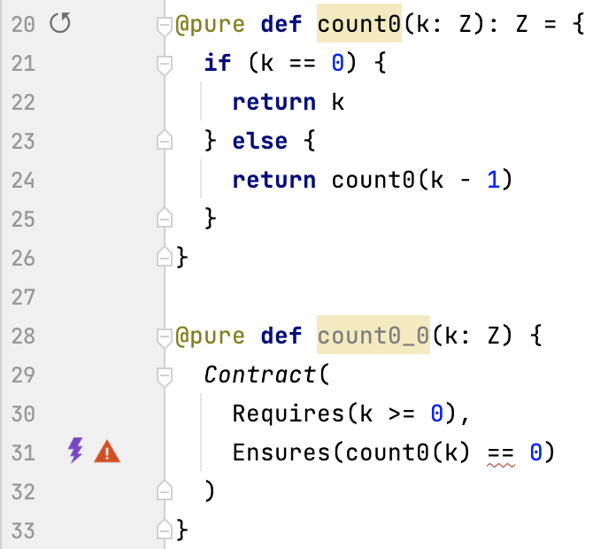
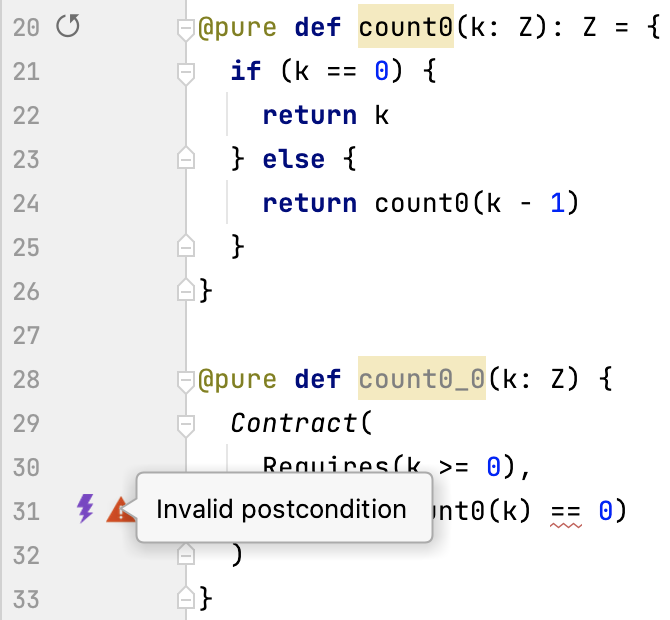
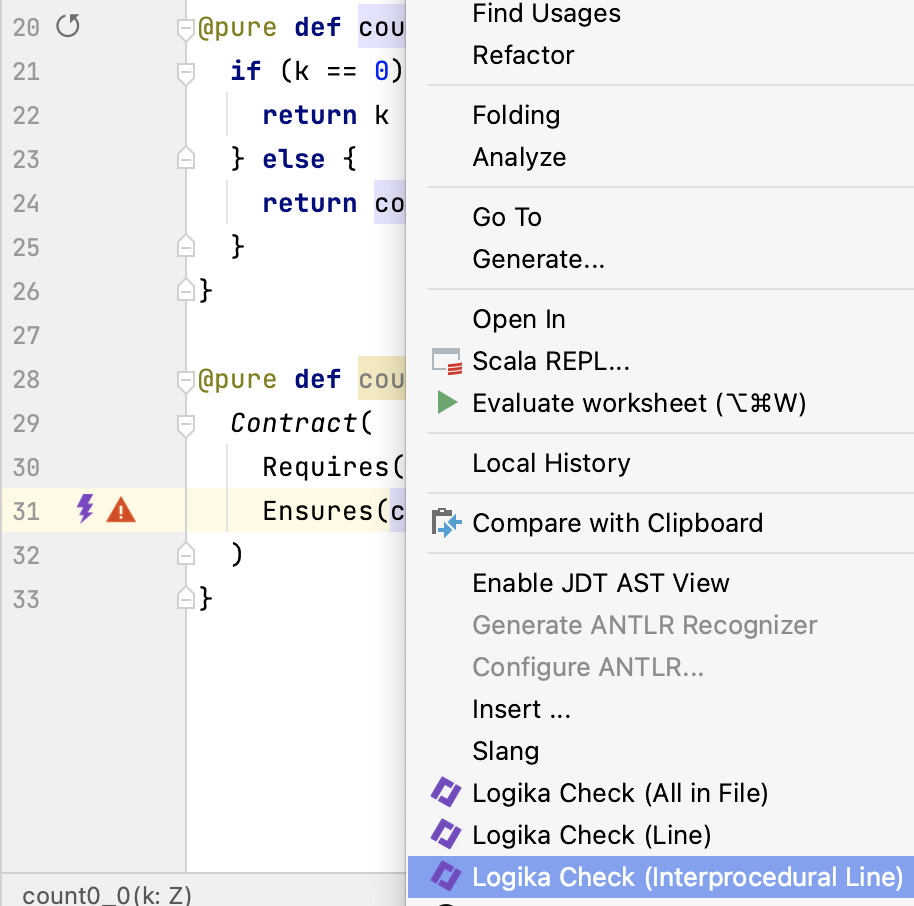
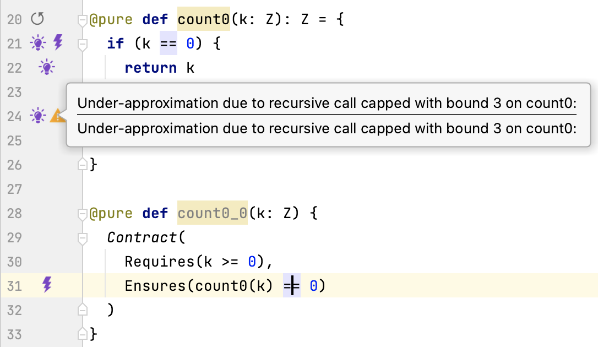
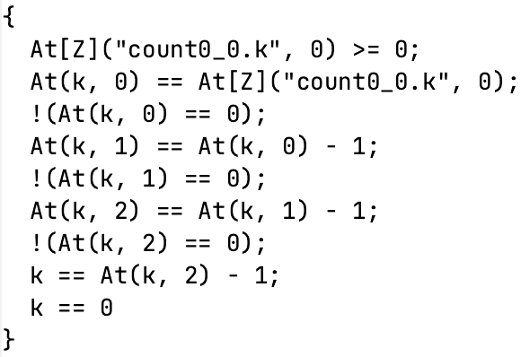 Unfolded if-branch
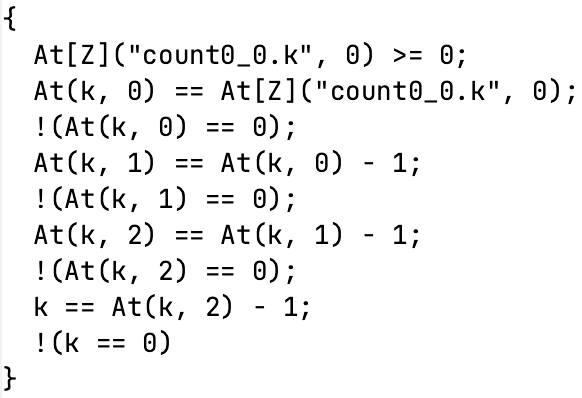 Unfolded else-branch
Exercise 2: Recursive Factorial Unfolding
Unfold function fac_rec two times.
Write down the fact for the unfolded function.
Inter-procedurally check the post-condition fac_rec(n) == fac_rec_spec(n).
|
|
of function fac_rec_lemma.
Iteration Unfolding
Example: Counting Down Iteratively
We can specify counting down recursively as follows.
cd(k) =
m = k
while m > 0
m = m − 1
m
Where the tailing m is the returned result.
We can calculate cd(2) observing the value of the local variable $m$ at each iteration.
cd(2)
{ m == 2 and m > 0 }
{ m == 2 − 1 and m > 0 }
{ m == 2 − 1 − 1 and m <= 0 }
= 0
It would be convenient if we could observe iterative programs similarly to recursive programs. Recall the similarity between tail-recursion and while-loops.
We rename k into m0, m1, m2, . . . counting upwards.
cd(2)
{ m0 == 2 and m0 > 0 }
{ m1 == 2 − 1 and m1 > 0 }
{ m2 == 2 − 1 − 1 and m2 <= 0 }
= 0
and replace sub-expressions by variable names.
cd(2)
{ m0 == 2 and m0 > 0 }
{ m1 == m0 − 1 and m1 > 0 }
{ m2 == m1 − 0 and m2 <= 0 }
= 0
This is exactly the same pattern we have observed for recursion. Let’s look for a fix-point equation.
We focus on the iterative part of the body of function cd.
m = k
while m > 0
m = m − 1
To observe one step of the execution of the loop we consider the following.
If the condition m > 0 is true, we execute the loop body and the execute the loop
again.
m = m − 1; while (m > 0) m = m − 1
If the condition is false, the loop is exited
(and the statement following the loop may be executed).
The above describes a conditional with an empty else-branch.
We have (in italics):
while (m > 0) m = m − 1 == if (m > 0) { m = m − 1; while (m > 0) m = m − 1 } (FP3)
The loop is a solution of fix-point equation (FP3).
We can use it for unfolding while-loops.
Loop Unfolding using (FP3)
Using
while (m > 0) m = m − 1 == if (m > 0) { m = m − 1; while (m > 0) m = m − 1 },
abbreviating while (m > 0) m = m − 1 with W, we calculate.
while (m > 0) m = m − 1
= if (m > 0) { m = m − 1; W }
= if (m > 0) { m = m − 1; if (m > 0) { m = m − 1; W } }
= if (m > 0) { m = m − 1; if (m > 0) { m = m − 1; if (m > 0) { m = m − 1; W } } }
More readable this is . . . and as a fact
if (m > 0) (m0 <= 0 => m == m0) &
m = m − 1 (m0 > 0 => m1 == m0 − 1) &
if (m > 0) (m0 > 0 & m1 <= 0 => m == m1) &
m = m − 1 (m0 > 0 & m1 > 0 => m2 = m1 − 1) &
if (m > 0) (m0 > 0 & m1 > 0 & m1 <= 0 => m == m2) &
m = m − 1 . . .
W
The complete body of the loop unfolded twice:
m0 == k
(m0 <= 0 => m == m0) &
(m0 > 0 => m1 == m0 − 1) &
(m0 > 0 & m1 <= 0 => m == m1) &
(m0 > 0 & m1 > 0 => m2 = m1 − 1) &
(m0 > 0 & m1 > 0 & m1 <= 0 => m == m2) &
Res == m
Note the similarity of the structure of the formula. with respect to the variables m0, m1, m2 in the iterative case. and the variables k0, k1, k2 in the recursive case. In the iterative case the variables occur as a consequence of consecutive assignments. In the recursive case they occur as a consequence of consecutive parameter passing.
Unfolding the Iterative Slang Counting Down Function
The function itself:
|
|
First Unfolding:
|
|
Second Unfolding:
|
|
We can see the effect of recursive unfolding in Slang. It occurs when inter-procedural check is chosen.
Recursive Counting Down and Unfolding in Logika
Let’s inter-procedurally check the post-condition count0(k) == 0
|
|
of function while0_0.
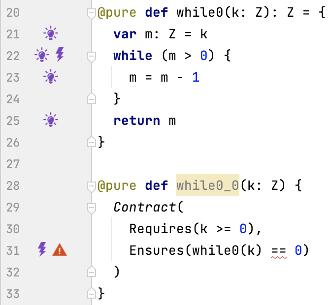
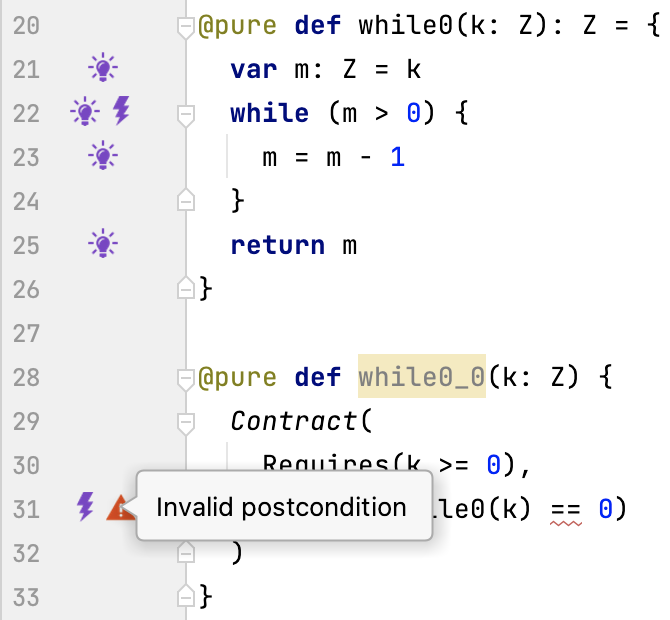
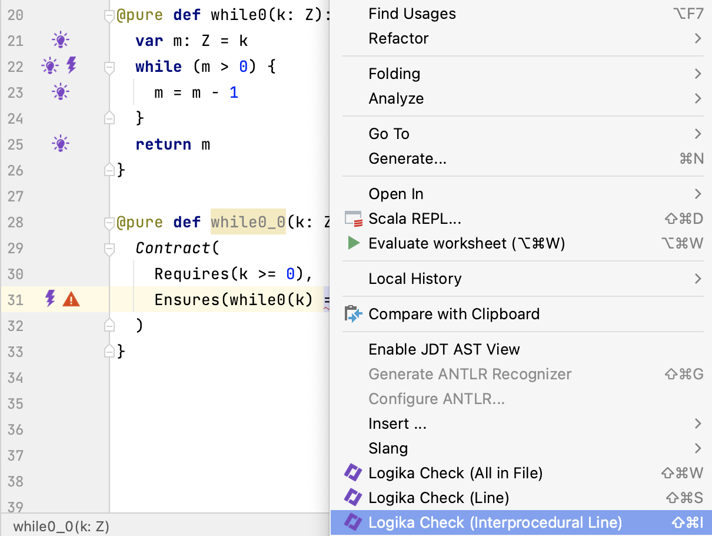
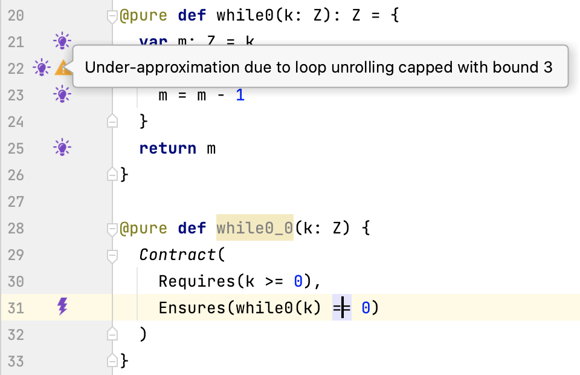
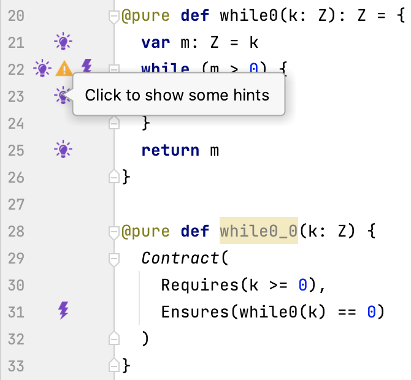
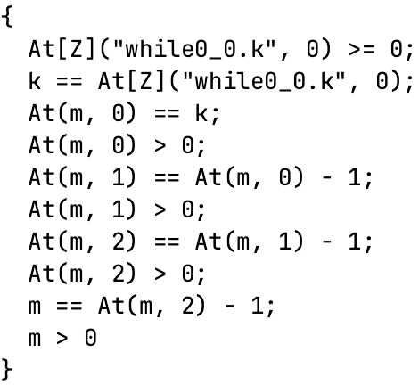 Second Unfolding
Exercise 3: Iterative Factorial Unfolding
- Unfold the loop of the function
fac_ittwo times - Write down the fact for the unfolded function
- Inter-procedurally check the post-condition
fac_it(n) == fac_rec(n)
|
|
of function fac_it_rec_lemma.
Symbolic Execution with Unfolding
Symbolic Execution with Recursion
|
|
-
Executing
count0(k)yields (k: K0), (PC:true) -
Executing
if (k == 0) {yields (k: K0), (PC:K0 == 0) -
Executing
return kyields (k: K0, Res: K0), (PC:K0 == 0) -
Executing
count0(k)yields (k: K0), (PC:true) -
Executing
} else {yields (k: K0), (PC:K0 != 0) -
Executing
return count0(k - 1)yields (k: K1), (PC:K0 != 0, K1 == K0 - 1) -
Executing
if (k == 0) {yields (k: K1), (PC:K0 != 0, K1 == K0 - 1, K1 == 0) -
Executing
return kyields (k: K1, Res: K1), (PC:K0 != 0, K1 == K0 - 1, K1 == 0)
Symbolic Execution with Iteratio
|
|
-
Executing
while0(k)yields (k: K), (PC:true) -
Executing
var m: Z = kyields (k: K, m: K), (PC:true) -
Executing
}yields (k: K, m: K), (PC:K <= 0) -
Executing
return myields (k: K, m: K, Res: K), (PC:K <= 0) -
Executing
while0(k)yields (k: K), (PC:true) -
Executing
var m: Z = kyields (k: K, m: K), (PC:true) -
Executing
while (m > 0) {yields (k: K, m: K), (PC:K > 0) -
Executing
m = m - 1yields (k: K, m: M1), (PC:K > 0, M1 > K - 1) -
Executing
}yields (k: K, m: M1), (PC:K > 0, M1 > K - 1, M1 <= 0) -
Executing
return myields (k: K, m: M1, Res: M1), (PC:K > 0, M1 > K - 1, M1 <= 0)
Slang Examples
Count Int Loop Rec
|
|
Fac Function Loop Rec Unfolding
|
|
Mult Add Rex It
|
|
Summary
- We have reviewed development and verification methodology for Slang programs
- We have looked at unfolding of recursive functions
- We have looked at unfolding of while-loops
- We have considered fix-points that provide a justification for unfolding
- We have looked at symbolic execution of recursive functions
- We have looked at symbolic execution of while-loops